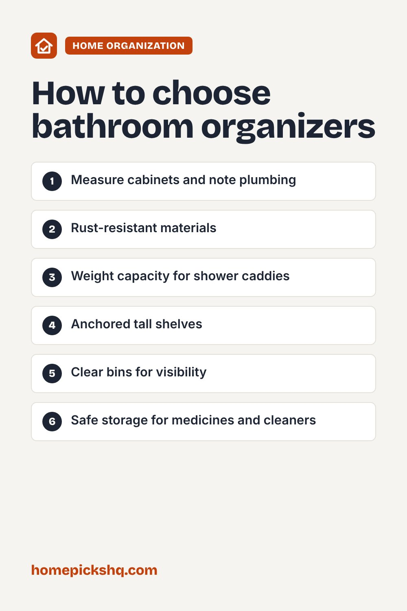

Best Bathroom Organizers: Under-Sink, Shower, and Counter Storage

How we write these guides: we research manufacturer specifications, expert guidance, and owner feedback. We do not claim to have lab-tested every product. Links to Amazon on this page are affiliate links; see our disclosure.
Bathrooms are small, damp, and full of little items. The right organizers keep products easy to find and the counter clear. Because of the moisture, materials matter as much as size.
Browse bathroom organizers on Amazon
Under-sink storage
Measure the cabinet and note the plumbing, because pipes often limit space. Organizers with cutouts for the drain work around them. Stackable bins and sliding drawers make use of the vertical space. Keep cleaning products grouped and out of reach of children.
Shower caddies
Look for rust-resistant stainless steel or coated metal. Hanging caddies go over the shower head or a rod, suction models stick to tile, and adhesive or tension pole styles are good for renters. Check the weight capacity, since full shampoo bottles are heavy.
Over-the-toilet and wall storage
Shelves and cabinets above the toilet use otherwise wasted space. Wall-mounted units free the floor. Make sure the unit is stable and anchored if it is tall.
Counter and drawer organizers
Trays keep daily items like toothbrushes and skincare in one place. Drawer dividers keep makeup, brushes, and tools sorted. Clear containers make it easy to see what you have.
Moisture and safety
Choose materials that resist mold and rust, and wipe surfaces regularly. Many pharmacists suggest storing medicines in a cool, dry place rather than a humid bathroom, so consider a bedroom or hallway cabinet instead. Keep medicines and cleaners away from children.
Quick buying checklist
- Measure cabinets and note plumbing
- Rust-resistant materials
- Weight capacity for shower caddies
- Anchored tall shelves
- Clear bins for visibility
- Safe storage for medicines and cleaners
See bathroom organizers on AmazonUse the checklist above to compare options. As an Amazon Associate I earn from qualifying purchases.

Free 2026 Home & Kitchen Checklist Pack
Download our printable 1-page buyer checklists for every major room and appliance—dimensions, wattage guide, and common pitfalls to avoid before you order.
Frequently asked questions
How do I organize a small bathroom?
Use vertical storage, wall-mounted shelves, and over-door hooks.
Are suction caddies reliable?
They can be, but they may fail on textured tiles or with heavy loads.
How often should I clean organizers?
Wipe them down weekly to prevent buildup.